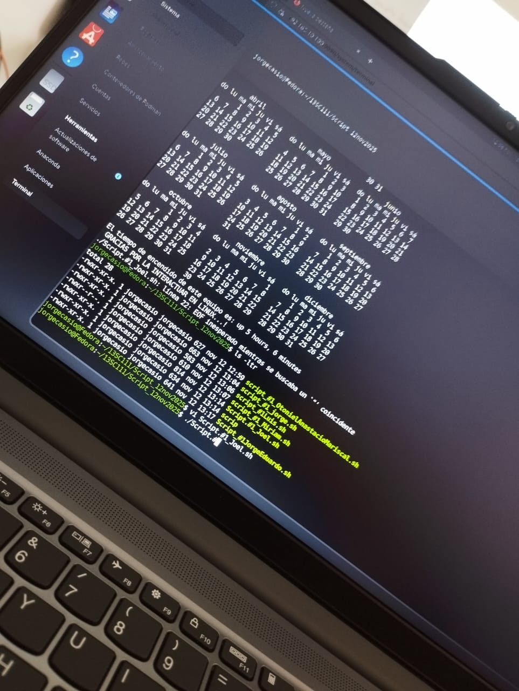

En este blog hablaré sobre mis gustos y algunas imágenes
Me gusta todo lo relacionado con la tecnología y la creación de proyectos, especialmente la robótica.


Me interesa aprender cómo funcionan los sistemas y seguir desarrollando mis habilidades.

Me gusta pasar tiempo de calidad con mis compañeros.
También me gustan mucho los caballos y la cultura vaquera.
Mis gustos musicales influyen en mi día a día
Reproduciendo: Ninguna
Mi Video